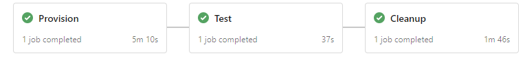
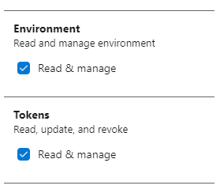
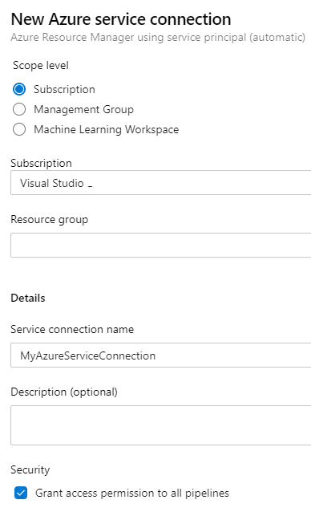
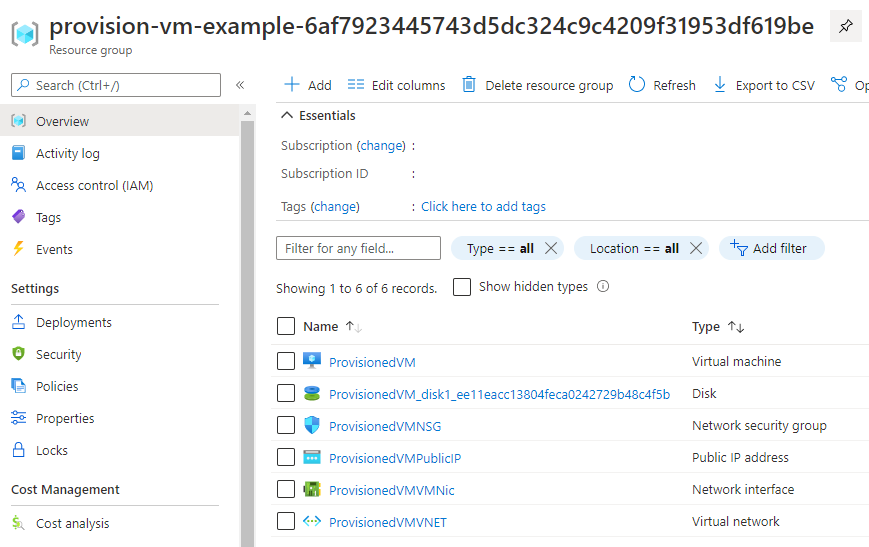
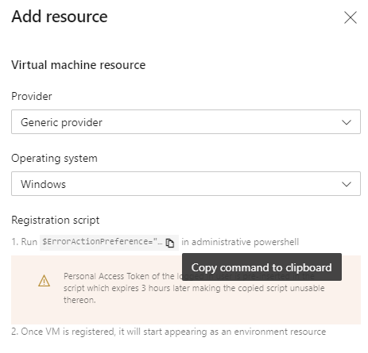
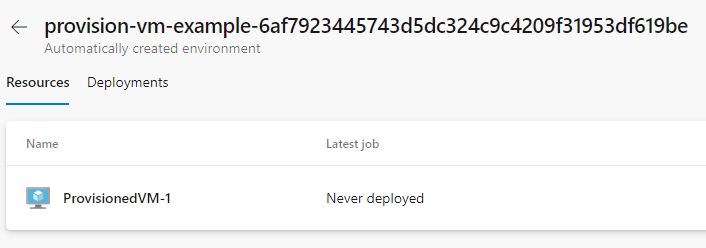

Provision an Azure VM in an Azure Pipelines Environment

In the past I’ve written the post How to install .NET Core on a Windows server where I talked about a custom Azure Pipelines task I build. To test this task in an actual pipeline I used an Azure virtual machine that I created manually and kept around for this specific purpose. Every time I wanted to test something I had to start the machine, test my task, log on to the server and check if .NET Core was installed successfully. If I wanted to test a clean install I had to uninstall .NET Core first. Which meant uninstalling 3 different pieces of software for each supported .NET Core version.
As you can see, a lot of manual steps were involved. So, I automated the process in a YAML pipeline with 3 simple stages:

- Provision
- Creates an Azure Pipelines environment in Azure DevOps.
- Provisions a fresh virtual machine in Azure.
- Registers the virtual machine in the Azure Pipelines environment.
- Test
- Runs my custom task & verifies that the installation is successful.
- Cleanup
- Deletes the Azure Pipelines environment.
- Deletes the Azure virtual machine.
In the rest of this post I’ll explain how this pipeline works.
Update 29-06-2021
The solution described in this post is based on the functionality in Azure DevOps to automatically create a new environment if it does not exist. A recent update to Azure DevOps has changed this behaviour. See Release Notes: Changed in the automatic creation of environments
When you follow the steps in this post and start a YAML pipeline, you might get the following error:
Job InstallNetCore: Environment provision-vm-example-99b1d9650923294a393a8e74602721fb980e549a could not be found. The environment does not exist or has not been authorized for use.If you get this error you’ll need to use a static environment name in the YAML pipeline, manually create that environment in Azure DevOps and remove/disable the step that deletes the environment in Azure DevOps during the cleanup stage. Here you can find instructions on how to unregister an agent from an Azure DevOps environment.
Table of contents
- Prerequisites
- Pipeline variables
- Provision Azure virtual machine in environment
- Run task on provisioned virtual machine
- Cleanup
- Conclusion
Prerequisites
To make the pipeline work you’ll need to create a Personal Access Token and an Azure Resource Manager service connection to connect to your Azure subscription.
Create Personal Access Token
Follow these steps to create a Personal Access Token (see create a PAT for more info):
- Log in to your Azure DevOps organization.
- Open the user settings menu in the top right corner and choose Personal access tokens.
- Choose New Token.
- Click the Show all scopes link.
- Give the token access to the scopes ‘Environment (Read & manage)’ and ‘Tokens (read & manage)’.
 - Click on Create.
- Copy the token so you can use it later on.
The ‘Environment (Read & manage)’ scope is required to register the virtual machine in the environment. The ‘Tokens (read & manage)’ scope is required to delete the environment at the end of the pipeline during cleanup. This doesn’t really seem logical to me. But the az devops invoke command we’re using to delete the environment fails without this scope.
Create Azure Resource Manager service connection
We’re going to use the Azure CLI task in our pipeline which requires an Azure Resource Manager service connection. Follow these steps to create the service connection (see Connect to Microsoft Azure for more info):
- Log in to your Azure DevOps organization and open your team project.
- Open the Project settings in the left bottom corner.
- Under Service connections choose New service connection.
- Select Azure Resource Manager as the type.
- Choose Service principal (automatic) as the authentication method.
- In my case it automatically found my subscription connected to my Azure DevOps account.
- Leave the resource group empty. We’re going to create a new one.
- Give it a name like MyAzureServiceConnection and choose Save.

Pipeline variables
After setting up the prerequisites we can start with the YAML pipeline. The pipeline starts with the variables section.
variables:
environmentName: "provision-vm-example-${{ variables['Build.SourceVersion'] }}"
adminPassword: "Password12345!"
token: "my-token"
I wanted to give the Azure Pipelines environment a random name so I can run multiple instances of the pipeline in parallel without them interfering with each other. I introduced the environmentName variable for this purpose.
I tried adding the Build.BuildNumber variable as the postfix for the environment name to make it unique but it didn’t work. The environment name that you use in deployment jobs (which we’ll use in the second stage) needs to be available during pipeline initialization. And runtime variables like Build.BuildNumber can’t be used during this time. So, I settled for the Build.SourceVersion variable which contains the latest Git commit ID.
If you want to know which variables are available during pipeline initialization. Go to the Use predefined variables page. Every variable with a Yes in the ‘Available in templates?’ column is available during pipeline initialization.
The adminPassword is used for the Administrator password of the virtual machine we’ll create. The token variable should be set with the value of the token you created in the prerequisites. For demo purposes I hardcoded these in the example but you should of course add these as secret variables to your pipeline or use a secrets store.
Provision Azure virtual machine in environment
The first stage in the pipeline will provision the Azure virtual machine and register the virtual machine in the environment. The start of this stage looks as follows:
stages:
- stage: Provision
jobs:
- job:
steps:
- task: AzureCLI@2
inputs:
azureSubscription: 'MyAzureSubscription'
scriptType: pscore
scriptLocation: inlineScript
inlineScript: |
We’re using the Azure CLI task with an inline PowerShell Core script to create the various resources in Azure through the MyAzureSubscription service connection we created earlier. I’ve chosen Azure CLI over for example ARM templates because of its simplicity and because it has an extension which allows me to also interact with Azure DevOps.
Provision the Azure virtual machine
The first command of the Azure CLI script is to create a resource group. It’s the same name as the environment so we can easily match the two.
az group create --name $(environmentName) --location westeurope;
Next, we create the virtual machine. With the following command a Windows Server 2019 VM will be created in the resource group.
az vm create `
--name ProvisionedVM `
--image Win2019Datacenter `
--admin-password "$(adminPassword)"`
--resource-group $(environmentName);
The name of the virtual machine will be ProvisionedVM. Keep in mind that the max length of the name is 15 characters.
The admin password is a required parameter that we need to provide. Notice I haven’t provided a name for the admin user. If you don’t provide the username the admin username will match the name of the user running the Azure CLI command. Which in this case will be vsts.
The result is an Azure resource group with virtual machine and all the resources it needs. 
Register the virtual machine in the environment
The last step in this stage is to register the newly created virtual machine in our Azure Pipelines environment. You might think “Don’t we need to create the Azure Pipelines environment first?". The answer is no. If you use a deployment job in a YAML pipeline and bind it to a non-existing environment Azure DevOps will create the environment for you.
To manually register a virtual machine in an environment, you would go to the environment in Azure DevOps, choose to add a new Virtual Machine resource, copy a PowerShell script (see image below) and execute the script on the virtual machine.

To automate these steps, we need that PowerShell script. I copied it from the Azure DevOps portal and saved it on GitHub in a file called register-server-in-environment.ps1. To be able to call it from our pipeline I’ve made the following changes:
- Add parameters to the script to specify the Azure DevOps organization, team project, environment, personal access token and optional tags.
- Download the latest .zip file with the agent to install.
The copied PowerShell script downloads a .zip file with the agent from a URL with a hardcoded version. I’ve added some code to always download the latest version. - Add the
--unattendendflag when registering the agent. - Add the agent number to the agent name, so you can install multiple agents on 1 virtual machine if you want.
- Raise an exception if registration of the agent in the environment fails.
To run this script on the Azure virtual machine we can use a custom script extension as described on Custom Script Extension for Windows.
If you want to add an Azure virtual machine to a deployment group instead of an environment you can use the existing Azure Pipelines Agent extension instead of using a custom PowerShell script. Have a look at Provision deployment group agents for more information.
We can use the az vm extension set CLI command to execute the custom script extension. The custom script either already needs to be on the virtual machine or accessible on the internet for download. The CLI command takes a settings JSON that should look like this:
{
"fileUris": [
"https://raw.githubusercontent.com/ronaldbosma/blog-code-examples/master/ProvisionAzureVMInAzurePipelinesEnvironment/register-server-in-environment.ps1"
],
"commandToExecute": "powershell.exe ./register-server-in-environment.ps1 -OrganizationUrl '$(System.CollectionUri)' -TeamProject '$(System.TeamProject)' -Environment '$(environmentName)' -Token '$(token)'"
}
In the JSON you specify the Uris to any files you want to download and the command you want to execute. As you can see we’re calling the register-server-in-environment.ps1 passing in the organization, team project, environment and token.
I advise you to make a copy of the register-server-in-environment.ps1 script and host it yourself. If you’re hosting it on GitHub, use the ‘raw’ URL to the script in the settings JSON or you’ll be downloading an HTML page from GitHub. Which won’t work, trust me…
To register the Azure virtual machine in our Azure Pipelines environment we can add the following code to the Azure CLI task’s inline script.
$customScriptUri = "https://raw.githubusercontent.com/ronaldbosma/blog-code-examples/master/ProvisionAzureVMInAzurePipelinesEnvironment/register-server-in-environment.ps1";
$customScriptSettings="{`\`"fileUris`\`":[`\`"$customScriptUri`\`"], `\`"commandToExecute`\`":`\`"powershell.exe ./register-server-in-environment.ps1 -OrganizationUrl '$(System.CollectionUri)' -TeamProject '$(System.TeamProject)' -Environment '$(environmentName)' -Token '$(token)'`\`"}";
az vm extension set `
--name CustomScriptExtension `
--publisher Microsoft.Compute `
--vm-name ProvisionedVM `
--resource-group $(environmentName) `
--settings $customScriptSettings;
With these steps the first stage is done and the pipeline can provision a virtual machine in Azure and register it in an Azure Pipelines environment as shown below.

If the registration of the virtual machine fails there are two folders you can look at for logging. In the C:\azagent\A1\_diag folder you’ll find logging of the actual registration of the server. In the folder C:\Packages\Plugins\Microsoft.Compute.CustomScriptExtension\1.10.9\Status you can find logging of the custom script extension. (You might have to change the extension version in the path.)
If you have a pipeline with only this stage and you run it, the registration will fail because the environment will not be automatically created by Azure DevOps. You’ll need to created it manually or add a stage with a deployment job to your pipeline. Which is what we’ll do next.
Run task on provisioned virtual machine
In the second stage we’re going to use the environment with the newly provisioned Azure virtual machine. It’s fairly straightforward if you already have experience with deployment jobs. Here’s the YAML snippet:
- stage: Test
dependsOn: Provision
condition: succeeded()
jobs:
- deployment: TestCustomTask
environment:
name: '$(environmentName)'
resourceType: VirtualMachine
strategy:
runOnce:
deploy:
steps:
- task: InstallNetCoreRuntimeAndHosting@1
inputs:
version: '6.0'
iisReset: false
norestart: true
This stage depends on the Provision stage to succeed before executing. It’s bound to the environment with the provisioned Azure virtual machine through the $(environmentName) variable.
In this example my custom task InstallNetCoreRuntimeAndHosting is executed on the virtual machine. It will install the latest .NET Runtime & Hosting bundle for .NET 6.0. You can of course execute whatever tasks or jobs you want.
Cleanup
After the test stage the Azure virtual machine and Azure Pipelines environment are no longer needed. So, we can remove them. We’re using the Azure CLI task again. Here’s the start of the third stage.
- stage: Cleanup
dependsOn: Test
condition: succeeded()
jobs:
- job:
steps:
- task: AzureCLI@2
inputs:
azureSubscription: 'MyAzureSubscription'
scriptType: pscore
scriptLocation: inlineScript
inlineScript: |
It’s similar to the start of the Provision stage. It only has another name and depends on the Test stage to succeed before executing.
Delete the Azure Pipelines environment
The first step in the PowerShell script is to delete the Azure Pipelines environment. There are no Azure Pipelines tasks at the moment to do this. Since we’ve already been using the AzureCLI task we’re going to use the Azure DevOps extension for Azure CLI. To my surprise it was already pre-installed when using the AzureCLI task.
Here’s the code to remove an environment from Azure DevOps. Credits go to Colin Dembovsky for his post az devops cli like a boss.
"$(token)" | az devops login --organization "$(System.CollectionUri)"
$environmentId = az devops invoke `
--area distributedtask `
--resource environments `
--route-parameters project="$(System.TeamProject)" `
--org "$(System.CollectionUri)" `
--api-version "6.0-preview" `
--query "value[?name=='$(environmentName)'].id" `
--output tsv
az devops invoke `
--area distributedtask `
--resource environments `
--route-parameters project="$(System.TeamProject)" environmentId=$environmentId `
--org "$(System.CollectionUri)" `
--http-method DELETE `
--api-version "6.0-preview"
az devops logout
The script first logs in to Azure DevOps with the token created during the prerequisites step. It then queries the id of the environment and deletes it. Lastly, we log out of Azure DevOps.
Delete the Azure virtual machine
After deleting the Azure Pipelines environment, we can delete the Azure virtual machine. Because we’ve created a new resource group that only contains the Azure virtual machine, we can simply delete the entire resource group with the following code.
az group delete --name $(environmentName) --no-wait --yes
The --no-wait flag causes our pipeline to proceed without waiting for the resource group to be deleted. The --yes flag makes sure we’re not prompted for a confirmation.
Conclusion
And with that our pipeline is done. We can now automatically provision an Azure virtual machine and register it in an Azure Pipelines environment, use the virtual machine in our pipeline and cleanup everything after we’re done.
A full example of the pipeline can be found here.